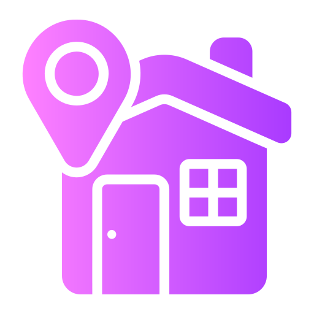
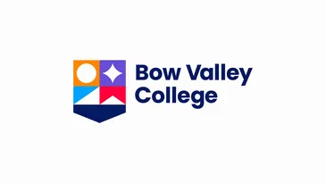

28 Coral Reef Bay N.E.
| Internship | |
|---|---|
| Data Platform and Governance Intern in AIA Life and General Insurance Company (2023) | Worked with data analysts professionals and clients for the development of data analytics solution |
| School Projects | |
|---|---|
| ProjectBox: A Document Management System for UST-CICS Information Systems Department Software Engineering Projects (2022) | Worked with clients and a team as a QA tester, ERD designer of Database, Interface designer for project development |
| School Projects | |
|---|---|
| A Predictive Analytics Approach Using Forecasting Methods to Set Model-based Targets for UST Simbahayan Community Development (2022) | Worked with clients and a team as a Data analyst performing ETL and visualizing data using PowerBI, and as a Database designer using Access for project development |
| School Projects | |
|---|---|
| Skrrt Shop PH (2021) | Worked with clients and a team as an Interface designer, Database Developer using MongoDB for project development |

Current
2019-2023
2017-2019